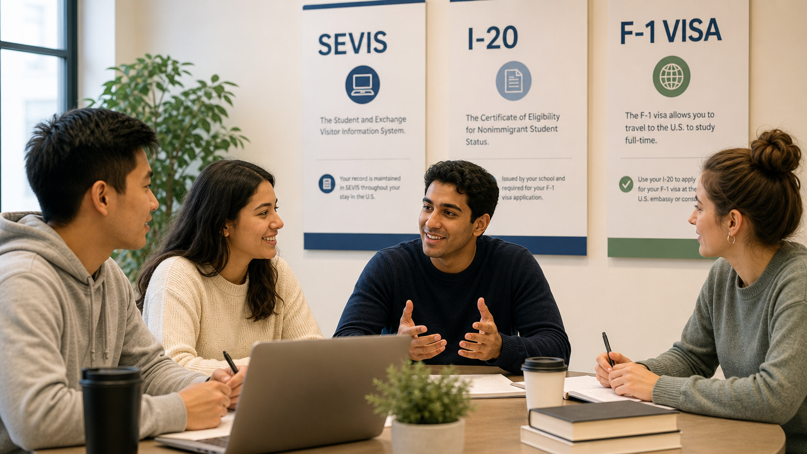

SEVIS, I-20, F-1 — документалната пътека, която никой не обяснява, докато нещо не се обърка

Four documents control your legal life as an international student in America — SEVIS, the I-20, the F-1 visa, and the I-94. They are not the same thing, and they break independently.
Most often, we see athletes lose scholarships and risk time away from school over small compliance mistakes.
The lifecycle, compressed
1. Admission and the first I-20
After acceptance, the university's international office (run by DSOs — Designated School Officials) creates your SEVIS record and issues your first I-20. The record sits in Initial status until you arrive on campus and check in. Until then, you don't have F-1 status — you have a piece of paper saying you're eligible to apply for it.
2. SEVIS fee, DS-160, embassy interview
You pay the I-901 SEVIS fee, complete the DS-160, and interview at the U.S. embassy in Sofia. If approved, the F-1 visa stamp is placed in your passport.
3. Entry and activation
You can enter the U.S. no earlier than 30 days before the program start date. Customs and Border Protection generates your I-94 at the border. When you check in with your DSO, your SEVIS record moves from Initial to Active. You are now formally in F-1 status.
4. Maintaining status
Document renewals, status check-ins, and a handful of routine procedures are what keeps your F-1 status alive.
What can break your status
- Falling below hour requirements. Typically 12 credit hours per semester. Dropping a class without prior DSO authorization can terminate your record the same week.
- Unauthorized employment. The trap that catches student-athletes most often. NIL deals, off-campus work without an EAD, exceeding the 20-hour on-campus limit during the semester — all unauthorized. Consequences are immediate.
- Administrative misses. Failing to report an address change within 10 days, letting your I-20 expire before extending it, or travelling with a stale DSO signature (must be ≤12 months old for continuing students) all break status.
- Suspension, dismissal, or withdrawal. SEVIS termination is automatic in most cases.
- Criminal issues — including minor ones. A DUI, a dismissed charge, or in some recent cases social media activity, can trigger termination or visa revocation.
If SEVIS is terminated: all employment authorization stops, the I-20 is no longer valid for re-entry, and unlawful presence may begin to accrue. None of these are warnings — they are the consequences themselves.
The 5-month rule
If your SEVIS record is terminated and you remain out of status for more than five months, reinstatement is rarely possible. You must leave the country and re-enter on a new SEVIS record — paying the fee again, often applying for a new visa, and losing all accumulated time toward CPT, OPT, and other benefits.
The 60-day grace period — what most students get wrong
After your program ends (or OPT ends), you receive a 60-day grace period to depart, change status, or transfer. You cannot work during it. If you leave the U.S. during the grace period, it ends immediately — you cannot re-enter on the same I-20. Many students treat this period as normal F-1 time. It is not.
If something has already gone wrong
If you are reading this because something on this list has already happened — a termination notice, a missed deadline, a flag at the port of entry, a misunderstood transfer — the most important thing is not to act in the next 24 hours without informed guidance. Recovery paths exist (USCIS reinstatement, travel and re-entry on a new SEVIS record, transfer to a new institution), but each has trade-offs and a closing window.
Our service
If something has gone sideways with your SEVIS, I-20, or F-1 status — or you suspect it has — we're here to help. Reach out and we can talk through your options together.
Key takeaways
- SEVIS, the I-20, the F-1 visa, and the I-94 are four different things — they function and break independently.
- The F-1 visa is an entry document. Your status lives in SEVIS, not your passport.
- Full-time enrolment, address updates within 10 days, an unexpired I-20, and authorized employment only — these are the pillars of staying in status.
- The 60-day grace period and the 5-month rule are the two timers that close options permanently. Know both.
This article reflects U.S. immigration regulations and SEVP guidance as of May 2026. Rules and fees can change; verify on the U.S. Department of State and Study in the States websites before acting. This article is informational and is not legal or immigration advice.
Четири документа управляват легалния ви живот като международен студент в Америка — SEVIS, I-20, F-1 визата и I-94. Те не са едно и също нещо и се чупят независимо.
Най-често виждаме спортисти да губят стипендии и да рискуват време извън университета заради малки грешки в спазването на правилата.
Жизненият цикъл, накратко
1. Прием и първото I-20
След приема международният офис на университета (управляван от DSO — Designated School Officials) създава вашия SEVIS запис и издава първото ви I-20. Записът стои в статус Initial, докато не пристигнете в кампуса и не се регистрирате. Дотогава нямате F-1 статус — имате лист хартия, който казва, че имате право да кандидатствате за такъв.
2. SEVIS такса, DS-160, интервю в посолството
Плащате I-901 SEVIS таксата, попълвате DS-160 и присъствате на интервю в Американското посолство в София. Ако бъдете одобрен, F-1 визовият печат се поставя в паспорта ви.
3. Влизане и активиране
Можете да влезете в САЩ не по-рано от 30 дни преди началната дата на програмата. Customs and Border Protection генерира вашето I-94 на границата. Когато се регистрирате при вашия DSO, SEVIS записът ви се премества от Initial в Active. Сега сте формално в F-1 статус.
4. Поддържане на статуса
Подновяване на документи, регулярни проверки на статуса и няколко рутинни процедури са това, което поддържа F-1 статуса ви активен.
Какво може да наруши статуса ви
- Падане под часовите изисквания. Обикновено 12 кредитни часа на семестър. Отказ от предмет без предварително разрешение от DSO може да прекрати записа ви още същата седмица.
- Неоторизирана заетост. Капанът, който най-често хваща студент-спортистите. NIL сделки, работа извън кампуса без EAD, надхвърляне на 20-часовия лимит в кампуса по време на семестъра — всичко неоторизирано. Последствията са незабавни.
- Административни пропуски. Непоявяване на смяна на адрес в рамките на 10 дни, оставяне на I-20 да изтече преди удължаване или пътуване с остарял DSO подпис (трябва да е ≤12 месеца за продължаващи студенти) — всичко това нарушава статуса.
- Спиране, отстраняване или оттегляне. Прекратяване на SEVIS е автоматично в повечето случаи.
- Криминални въпроси — включително дребни. Шофиране в нетрезво състояние, отхвърлено обвинение или в някои скорошни случаи дейност в социалните мрежи могат да задействат прекратяване или отнемане на виза.
Ако SEVIS бъде прекратен: цялата работна оторизация спира, I-20 вече не е валиден за повторно влизане и може да започне натрупване на незаконен престой. Никое от тези не е предупреждение — те са самите последствия.
5-месечното правило
Ако вашият SEVIS запис бъде прекратен и останете извън статус повече от пет месеца, възстановяването рядко е възможно. Трябва да напуснете страната и да влезете отново на нов SEVIS запис — плащайки таксата отново, често кандидатствайки за нова виза и губейки цялото натрупано време към CPT, OPT и други привилегии.
60-дневният гратисен период — какво повечето студенти бъркат
След като програмата ви приключи (или след OPT), получавате 60-дневен гратисен период за заминаване, смяна на статус или прехвърляне. Не можете да работите по време на него. Ако напуснете САЩ по време на гратисния период, той приключва веднага — не можете да влезете отново на същото I-20. Много студенти го третират като нормално F-1 време. Не е така.
Ако нещо вече се е объркало
Ако четете това, защото нещо от този списък вече се е случило — известие за прекратяване, пропуснат срок, проблем на граничния пункт, неразбран трансфер — най-важното е да не действате в следващите 24 часа без информирана насока. Има реални пътища за възстановяване (reinstatement през USCIS, пътуване и повторно влизане на нов SEVIS запис, трансфер в нова институция), но всеки има компромиси и затварящ се прозорец.
Нашата услуга
Ако нещо се е объркало със SEVIS, I-20 или F-1 статуса ви — или подозирате, че е — ние сме тук, за да помогнем. Свържете се с нас и можем да обсъдим възможностите ви заедно.
Най-важното накратко
- SEVIS, I-20, F-1 визата и I-94 са четири различни неща — функционират и се чупят независимо.
- F-1 визата е документ за влизане. Статусът ви живее в SEVIS, не в паспорта ви.
- Записване на пълно работно време, актуализации на адреса в рамките на 10 дни, неизтекло I-20 и само оторизирана заетост — това са стълбовете на оставането в статус.
- 60-дневният гратисен период и 5-месечното правило са двата таймера, които затварят опциите за постоянно. Знайте и двата.
Тази статия отразява американското имиграционно законодателство и насоките на SEVP към май 2026 г. Правилата и таксите могат да се променят — проверявайте на уебсайтовете на Държавния департамент на САЩ и Study in the States преди действие. Тази статия е информационна и не представлява правен или имиграционен съвет.